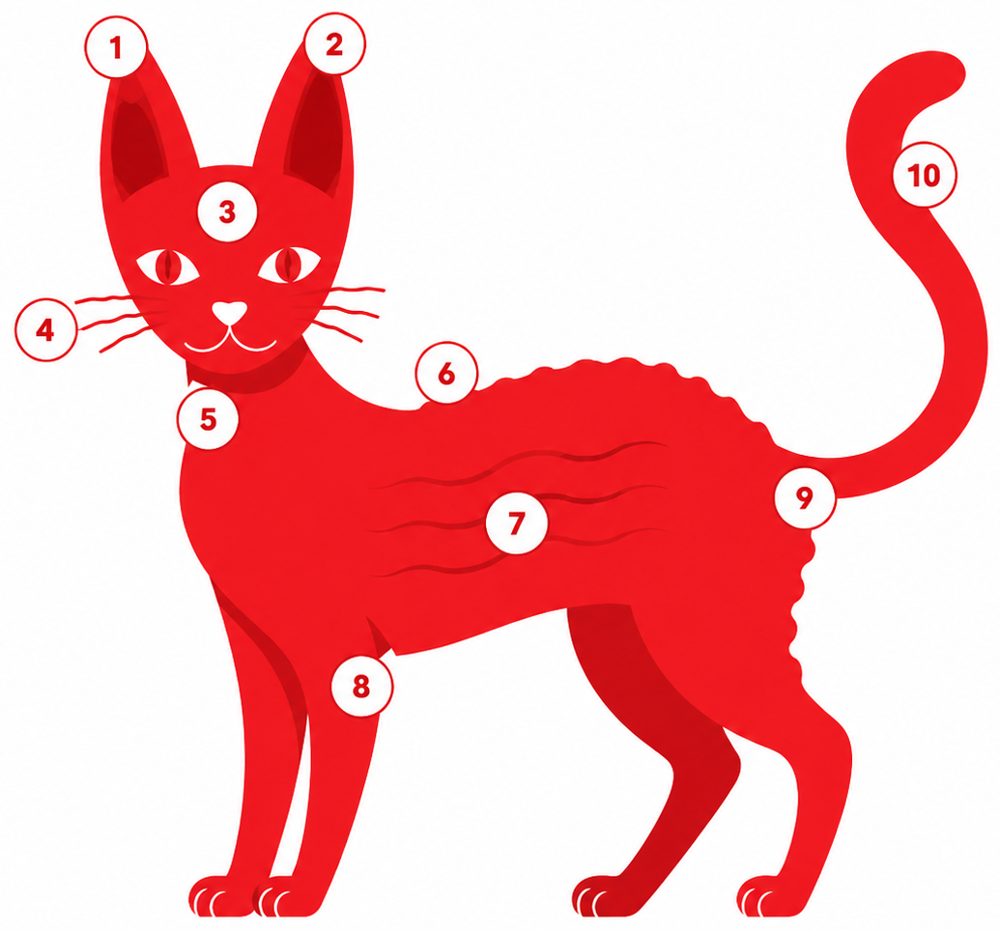

Rex de Cornouailles
Une silhouette de lévrier, une fourrure ondulée unique et un caractère de « pot de colle » : le Rex Cornish est l'un des chats les plus distinctifs et attachants qui soient.
D'une portée fermière à une race reconnue
Le Rex de Cornouailles naît d'une mutation génétique récessive entièrement naturelle. Son histoire commence dans une ferme britannique et se poursuit jusque dans les laboratoires de génétique féline contemporains.
Le chaton Kallibunker
En Grande-Bretagne, un chaton au poil bouclé naît dans une portée ordinaire. Baptisé Kallibunker, il devient le fondateur de la race.
Cornouailles & le lapin Rex
La race est nommée d'après le comté de Cornouailles, où elle est apparue, et pour sa ressemblance frappante avec la fourrure du lapin Rex.
Le gène identifié
Le gène récessif responsable du poil ondulé a été identifié par le Lyons Feline Genetics Research Laboratory de l'Université de Californie à Davis (UC Davis).
Un compagnon qui ne vous lâche pas
Surnommé « pot de colle », « petit singe » et parfois « extra-terrestre » pour ses grandes oreilles, le Rex Cornish est l'un des chats les plus interactifs.
Affectueux
Recherche constamment le contact, suit son humain de pièce en pièce et adore la chaleur.
Joueur & curieux
Énergique toute sa vie : il rapporte, grimpe, ouvre les tiroirs et invente des jeux.
Sociable
S'entend avec enfants, chiens et autres chats. Mal à l'aise dans la solitude prolongée.
Étonnamment simple
Le Rex de Cornouailles n'a ni poil de garde ni véritable sous-poil : seule subsiste une fine couche de duvet court, doux et ondulé. Résultat : aucun brossage n'est nécessaire, et la mue est minime.
- ✓Pas de brossage requis
- ✓Bain occasionnel (peau parfois grasse)
- ✓Sensible au froid, garder au chaud
Mythe à dissiper : « hypoallergénique »
Malgré l'absence de mue visible, le Rex de Cornouailles doit être considéré comme allergène, au même titre que tout chat. Les allergènes proviennent de la salive et des squames, pas seulement du poil. Toute personne sensible devrait passer du temps avec un Rex avant d'adopter.
Anatomie d'un Rex de Cornouailles
Touchez une pastille sur le chat — ou un élément de la liste — pour situer la partie et lire le critère du standard CRCC.

Illustration du standard — les numéros sur le chat renvoient aux parties ci-dessous.
Reconnu par les grandes associations félines
Chaque association publie son propre standard de race. Consultez celui qui fait foi pour votre enregistrement.
Standard de race CRCC (PDF)
Le document de référence du club, illustré, à télécharger et imprimer.
Prêt·e à rencontrer un Rex ?
Parcourez l'annuaire des chatteries membres du CRCC.
Voir l'annuaire d'éleveurs